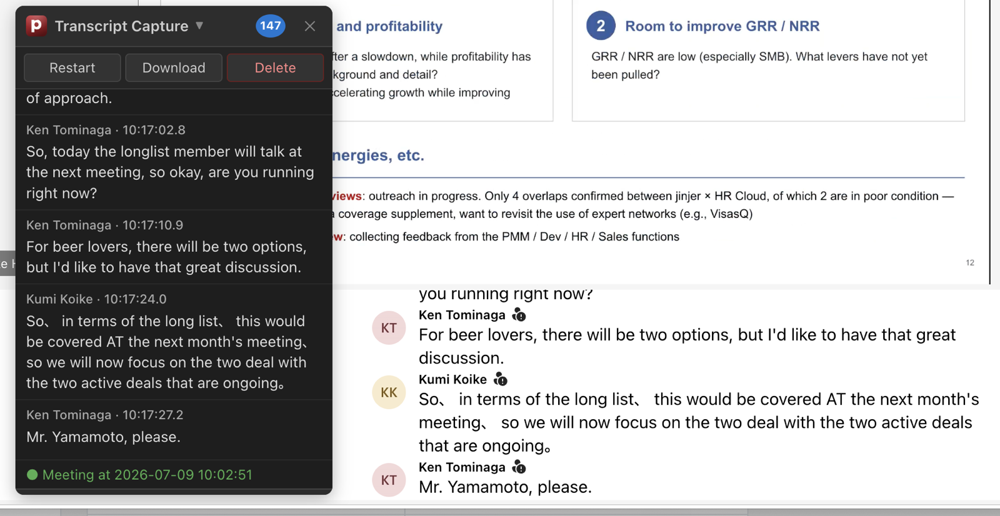

2b. Click the bookmarklet. A dialog will appear to start or resume a capture session. Use the Download button in the panel to save the transcript as a JSON file.

Right click on your bookmark and select "Edit".
Paste the URL below into the address field of your bookmark.
Save.
Loading...